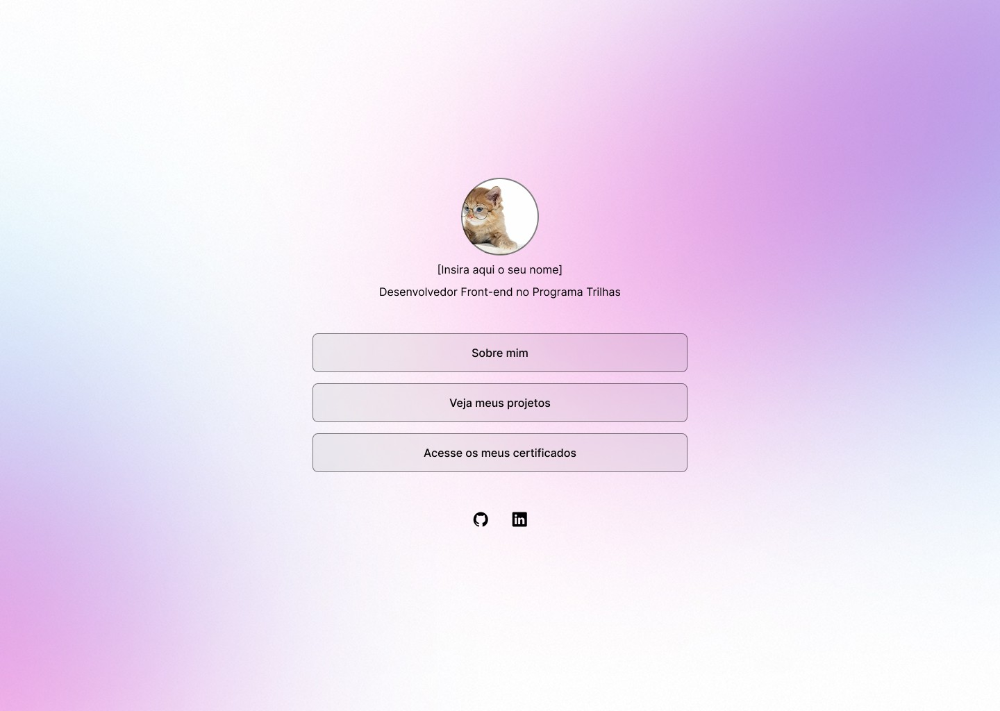
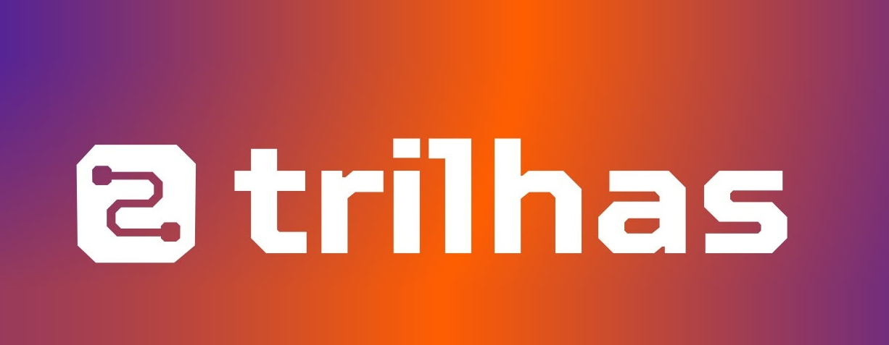

Portfólio
Meu primeiro portfólio, feito com HTML, CSS e JavaScript. Foi aqui que coloquei em prática o que aprendi no Trilhas para criar um pequeno site sobre mim.
Acessar projeto →Desenvolvedora Front-end no Programa Trilhas

Meu primeiro portfólio, feito com HTML, CSS e JavaScript. Foi aqui que coloquei em prática o que aprendi no Trilhas para criar um pequeno site sobre mim.
Acessar projeto →
Estou na trilha de Front-end do Trilhas Inova 2026, aprendendo na prática a construir interfaces com HTML, CSS e JavaScript. Cada aula tem sido um passo a mais rumo à minha carreira na tecnologia.
Em andamentoOi, eu sou a Paula! Ainda estou no comecinho da minha jornada na programação, mas com muita vontade de aprender e crescer. Sempre gostei de criar e de entender como as coisas funcionam, e foi no front-end que encontrei um jeito de unir essas duas paixões. Hoje estou na trilha de Front-end do Programa Trilhas, aprendendo um pouco mais a cada dia e cuidando de cada detalhe para construir páginas simples, bonitas e intuitivas.